Sliders let users select a value from a continuous or discrete range of values by moving the slider thumb.
Usage
- Use a slider to adjust the steps or strength of the brightness, contrast, etc.
- Sliders are classified into a horizontal type, vertical type, or multi type, depending on their directions and the number of sliders that are adjusted simultaneously.
- In some sliders, the center has a two-way adjustment bar to increase or decrease the value on either side around the center.
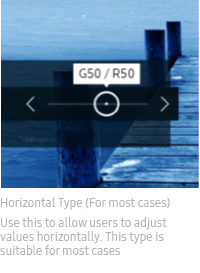
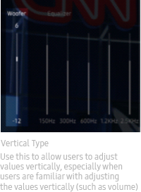
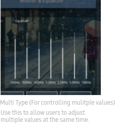
1. How to Use a Horizontal Slider
- The horizontal slider is the most used slider type.
- Horizontal sliders provide users with the most familiar experience.
- They can offer users a more comfortable experience than the television remote controls do.
- If you need to add components other than the slider, do not place them in the orientation of the slider.
- For example, for a vertical slider, components should be placed on the left or right of the slider. Ensure that they are not placed at the top or bottom of it.
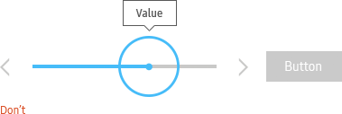
2. How to Use a Vertical Slider
- Use a vertical slider when users are familiar with adjusting the values vertically.
- Use vertical sliders in the equalizer settings menu.
- If you need to add components other than the slider, do not place them in the orientation of the slider.
- For example, for a vertical slider, components should be placed on the left or right of the slider. Ensure that they are not placed at the top or bottom of it.
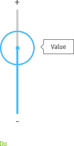
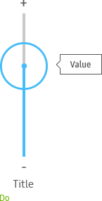
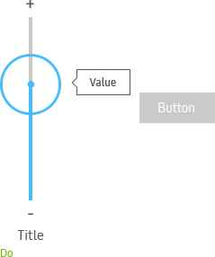
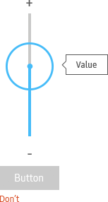
3. How to Use a Multi Slider
- Display labels for sliders when multiple sliders are used. For horizontal sliders, display labels to the left of adjustment bars.
For vertical sliders, display labels at the bottom of adjustment bars.
- Multi sliders should display the current value of the focused adjustment bar while users are adjusting values.
- If you need to add components other than the slider, do not place them in the orientation of the slider.
- For example, for a vertical slider, components should be placed on the left or right of the slider. Ensure that they are not placed at the top or bottom of it.
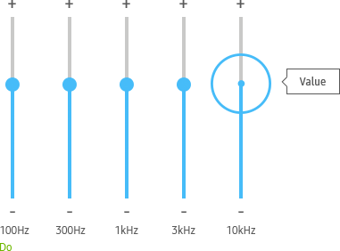
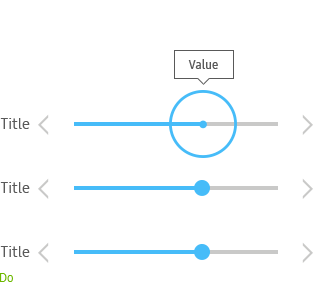
Interaction
1. Horizontal Slider > Left / Right
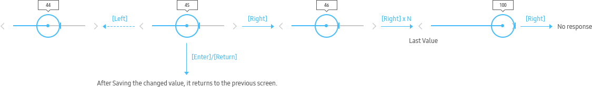
2. Vertical Slider > Up / Down
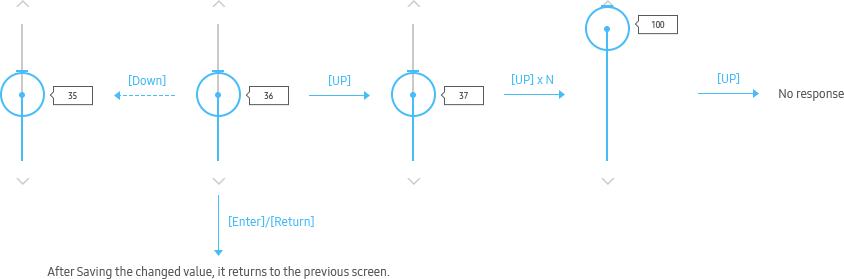
Specs
Properties
A slider consists of the following elements:
1. Adjustment bar (Mandatory)
- The directions of increasing the value of the adjustment bar are as follows:
. Horizontal type: The lowest value is located to the left and the highest value is located to the right.
. Vertical type: The lowest value is located at the bottom and the highest value is located at the top.
2. Thumb (Mandatory)
- Make the thumb of the slider the focused state when it is active.
3. Tooltip (Optional, default = Y)
- Display the current value if it is known.
- If the value cannot be known, then it is not necessary to display the value because the value changes continuously.
- If both ends of the slider display different values, display the two values at the same time and also put a slash (/) between the values.
4. Increase/decrease indicator (Mandatory)
- By default, the indicator is displayed as "
< " or ">".
- In exceptional cases, if two values should be recognized clearly, you can use the metaphor.
. Example: Left/Right (Sound balance), +/- (Equalizer)
- The increase/decrease indicator cannot be selected and focused on.
5. Center point (Mandatory, for two-way increase/decrease type)
- A two-way slider with different properties in both ends should display the center point.